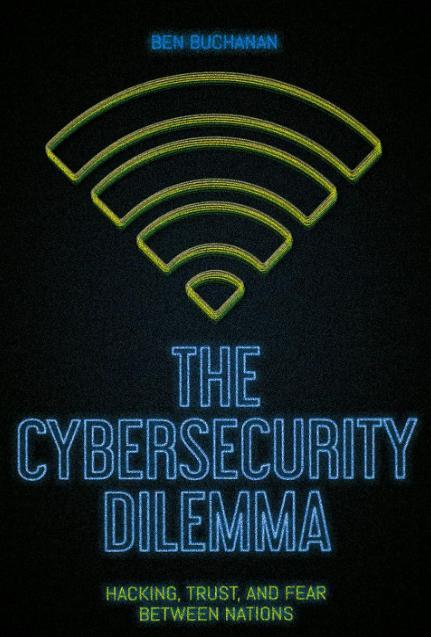

📚 Cybersecurity Book Reviews
Personal reviews, summaries, and insights from cybersecurity books I've read.
Security Yearbook 2024 by Richard Stiennon

The book explores the most relevant areas of cybersecurity, presenting the trajectory and challenges of the main entrepreneurs in the sector. In addition to a brief retrospective of the events of 2023, the work provides a detailed overview of the market in 2024, including an extensive list of security companies, mergers and investment rounds that shaped the industry.
Countdown to Zero Day by Kim Zetter
The book is an excellent reading for all those curious to understand the development, the attack chain, the reverse engineering, and repercussions of one of the most iconic cyberattacks: Stuxnet. The book details how this malware marks the beginning of a new era of espionage, sabotage, and attacks directed at critical infrastructure of nations. Each statement of the author is based on good references, which gives credibility to the narrative. One of the highlights is the footnotes. My tip: don't ignore them! Many of them have valuable information that enriches and gives a deeper understanding of the text. Loved the reading and recommend it to all those people who want to learn more about cybersecurity history.
The Cybersecurity Dilemma by Ben Buchanan

This book took me longer to finish than usual, as it takes a dense, analytical approach that requires close attention. Nonetheless, it is an engaging read that extends the classical security dilemma into the domain of cybersecurity. Buchanan develops the argument systematically, showing how states intrude into each other’s networks not only to prepare for attacks but also to strengthen defenses, actions that can still be perceived as threatening and escalate tensions, even when no harm is intended. He supports his arguments with examples drawn from the Snowden leaks, notable public incidents, and documented government practices. In its conclusion, the book offers policy recommendations on how to mitigate the risks of misunderstanding and escalation. It is an interesting text for anyone seeking to understand the logic of state behavior in cyberspace.
⬅ Back to Home